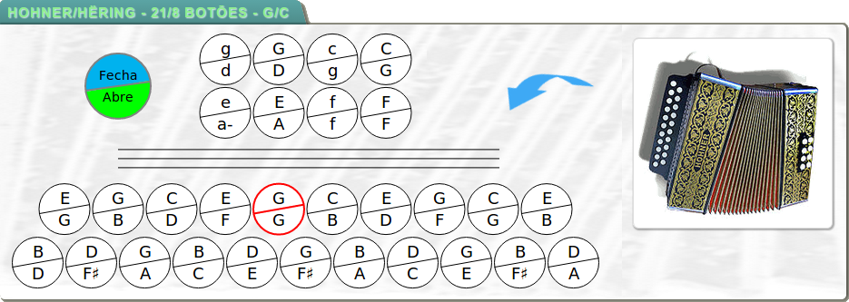
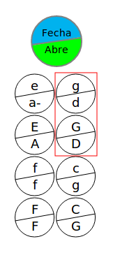
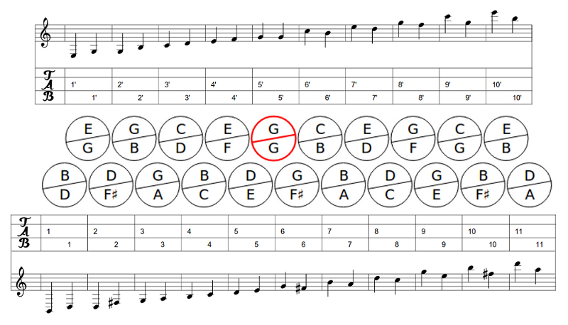
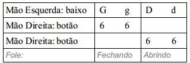

Sistemática da Tablatura para Acordeon Diatônico
|
|
Conhecendo a Gaita de 8 Baixos
Antes de começarmos a entender o sistema de tablaturas para acordeon, vamos examinar a disposição dos botões de uma gaita de 8 baixos.
Tomemos como exemplo um acordeon afinado em Sól/Dó, segundo a “Afinação Diatônica Brasileira Natural”. Os botões devem estar dispostos conforme a figura abaixo:
Figura 1: A gaita Hohner de 21/8 botões, afinada em Sol e Dó.
Por se tratar de um acordeon diatônico, observe que cada botão emite duas notas distintas, salvo o botão destacado em vermelho, que é chamado de “pedal”. Por isso, também, chamamos o acordeon diatônico de “Gaita Ponto”.
Neste material, adotamos algumas convenções. A saber:
- As notas são representadas por letras maiúsculas, seguindo o padrão das cifras musicais.
- Os acordes (dos baixos) são representados por letras minúsculas.
- Os acordes menores são complementados com um hífen (-).
- Em cada botão, a nota representada na parte superior é a que soa quando o fole está fechando.
Breve explicação sobre as cifras
As cifras são usadas em todos os instrumentos musicais. Elas são compostas por letras, sinais e números. As notas básicas são representadas por sete (7) letras maiúsculas do alfabeto. Cada letra representa uma nota: A = LÁ; B = SI; C = DÓ; D = RÉ; E = MI; F = FÁ; G = SOL.
Conhecendo os Baixos (Mão esquerda)
Primeiramente, passe a mão esquerda através da alça dos baixos. Os oito botões que são acessíveis para você agora, estão dispostos em quatro pares, conforme a figura 2.
|  |
Observe o par destacado em vermelho. Para cada par:
enquanto que, abrindo o fole, obteremos o baixo em Ré (D) e o acorde ré (d). |
Figura 2: Mapa dos baixos de um acordeon diatônico afinado em Sol e Dó.
Enumerando os Botões (Mão direita)
Considere a gaita na posição horizontal e o lado esquerdo como o topo da mesma. Para identificar os botões, vamos contá-los da esquerda para a direita (isto é, de cima para baixo). Também, para diferenciar uma fileira de botões da outra, vamos contá-las de fora (primeira fileira ou fileira externa) para dentro (segunda fileira ou fileira interna). Na primeira fileira, a contagem começa em 1 e vai até o último botão da fileira. Na segunda fileira, recomeçamos a contar de 1 até o último botão, mas para diferenciar da primeira fileira, incluiremos um apóstrofo (') após o número. Caso haja uma terceira fileira, marca-se com dois apóstrofos ('') e assim por diante.
A contagem dos botões é exemplificada na figura abaixo:
Figura 3: Identificação dos botões da gaita para a tablatura.
A tablatura
Agora que já conhecemos a disposição dos botões da gaita, podemos ver se como se representa uma tablatura para acordeon. O objetivo de criarmos tablaturas é oferecer uma visão simplificada de uma partitura para quem está iniciando os estudos e não connhece notação musical. Outra característica importante da tablatura é que ela é criada especificamente para cada tipo diferente de instrumento, ou seja, uma tablatura para acordeon tem uma relação física direta com a gaita para qual ela foi projetada e, para cada nota na pauta, ela indica exatamente qual botão deve ser pressionado no acordeon.
A tablatura para acordeon tem o formato de uma tabela com 3 linhas. Na linha superior representam-se os baixos (mão esquerda). Na segunda e terceira linhas exibem-se os botões tocados com a mão direita, sendo que, a segunda linha mostra quais botões devem ser pressionados com o fole fechando e, a terceira linha, os botões pressionados com o fole abrindo. As linhas verticais representam as barras de compasso.
Figura 4: A tablatura.
Apesar do desenho simples, muitas informações são representadas simultaneamente. Note que, no exemplo acima, temos a representação de dois compassos. No primeiro deles, tocam-se os baixos de Sol, enquanto pressiona-se o botão número 6 da primeira fileira, com o fole fechando. O segundo compasso indica a execução dos baixos de Ré então pressiona-se o botão botão número 6 da primeira fileira, com o fole abrindo.
Exercício 1:
Nota: Para este primeiro exercício, considere o par de botões de baixos no topo, do lado de fora.
Proceda da seguinte maneira:
- Pressione o registro de ar e abra o acordeon.
- Solte o registro de ar, o acordeon deve permanecer aberto (a perda de um pouco de ar é normal).
- Pressione o baixo (G) alternando com o acorde (g), enquanto você fecha o acordeon: Você ouvirá o baixo e, em seguida, um acorde em sol maior. Quando o acordeon estiver fechado, continue o movimento, agora abrindo, mas desta vez sem o uso do registro de ar. Você vai ouvir o baixo (D) e o acorde (d) em ré maior.
Repita este exercício, mas agora, cada vez que você pressionar o botão do baixo com a mão esquerda, pressione simultaneamente, um botão com o dedo indicador da mão direita, por exemplo, o sexto botão na fileira externa (primeira fileira). Garanta que pressionou e soltou o botão entre cada nota.
Toque o seguinte:
Nota: Perceba que as notas puxadas (fole abrindo) são listadas na linha de baixo da tablatura!
Toque agora, o seguinte:
E depois, isto:

As notas da mão direita soam, neste exercício, ao longo de dois tempos do compasso. Os tempos do compasso surgem com a mão esquerda:
- Baixo -> Tempo 1
- Acorde -> Tempo 2
Pressione o botão 6 com o seu dedo indicador da mão direita, enquanto você toca uniformemente o baixo e o acorde com a mão esquerda; solte o botão e continue o exercício. Você está tocando agora mínimas (notas que valem dois tempos).
Agora, toque:

Você acabou de executar as suas primeiras notas orientadas no acordeon. É muito importante manter a disciplina durante a execução para poder ganhar agilidade e adquirir a independência de movimento dos dedos enquanto coordena as duas mãos. Estas dicas podem ajudar na deste exercício (e de todos os demais):
- Comece devagar
- Levante o dedo (liberando o botão) após cada nota, mesmo se tocar a mesma nota várias vezes seguidas
- Marque o ritmo com os pés (pisando com o baixo e levantando o pé durante o acorde)
- Quando memorizar a peça, cantarole enquanto toca
Exercício 2:
Se você já está confortável com o exercício acima, passemos agora a exercitar o ritmo de valsa. A valsa possui compassos de 3 tempos (iguais), que no acordeon vamos representar na baixaria tocando uma vez o baixo e duas vezes o acorde correspondente. A fim de acompanhar os baixos (e treinar também a mão direita), vamos tocar junto com os baixos, alguns botões.
Nota: Para este exercício, considere o par inferior de botões de baixos, na fileira externa.
Proceda da seguinte maneira:
- Execute as partes de cada mão separadamente, até decorar bem os movimentos
- Depois, tente coordenar os movimentos da mão esquerda com os da mão direita
- Toque dois compassos com o fole abrindo e dois compassos com o fole fechando